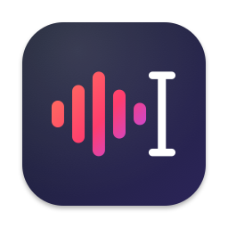
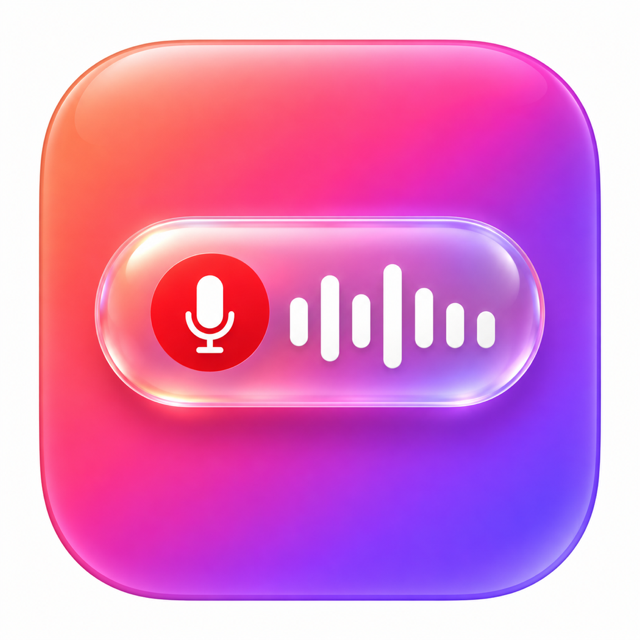
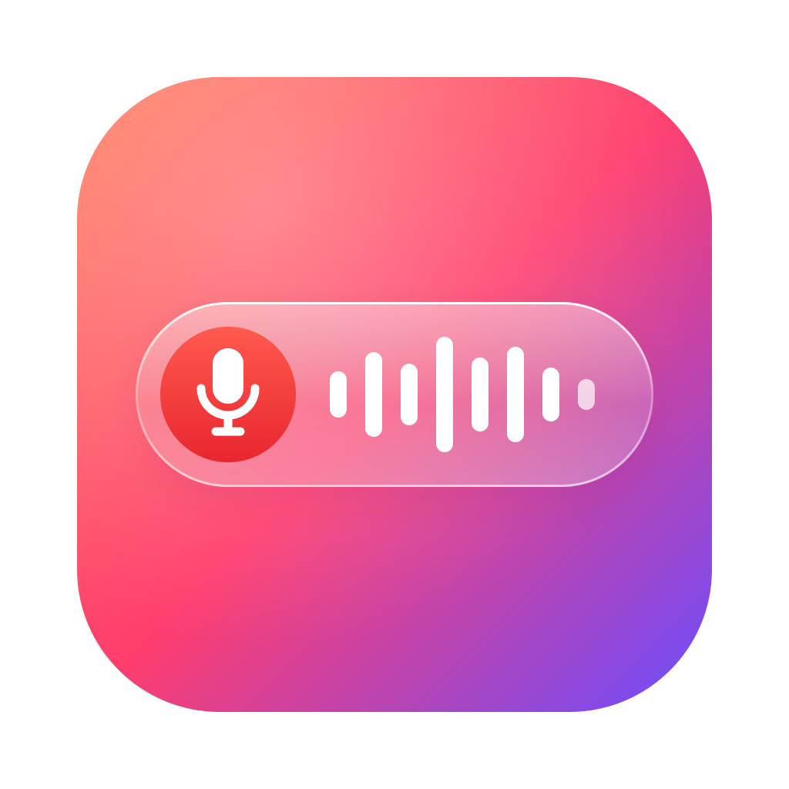
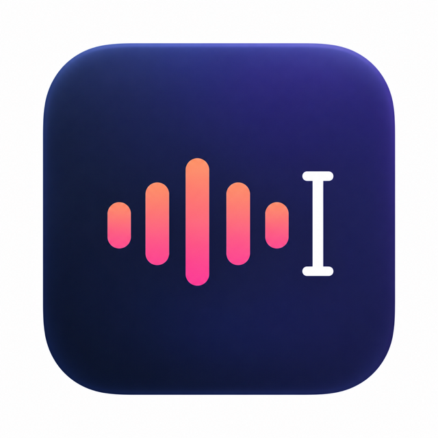
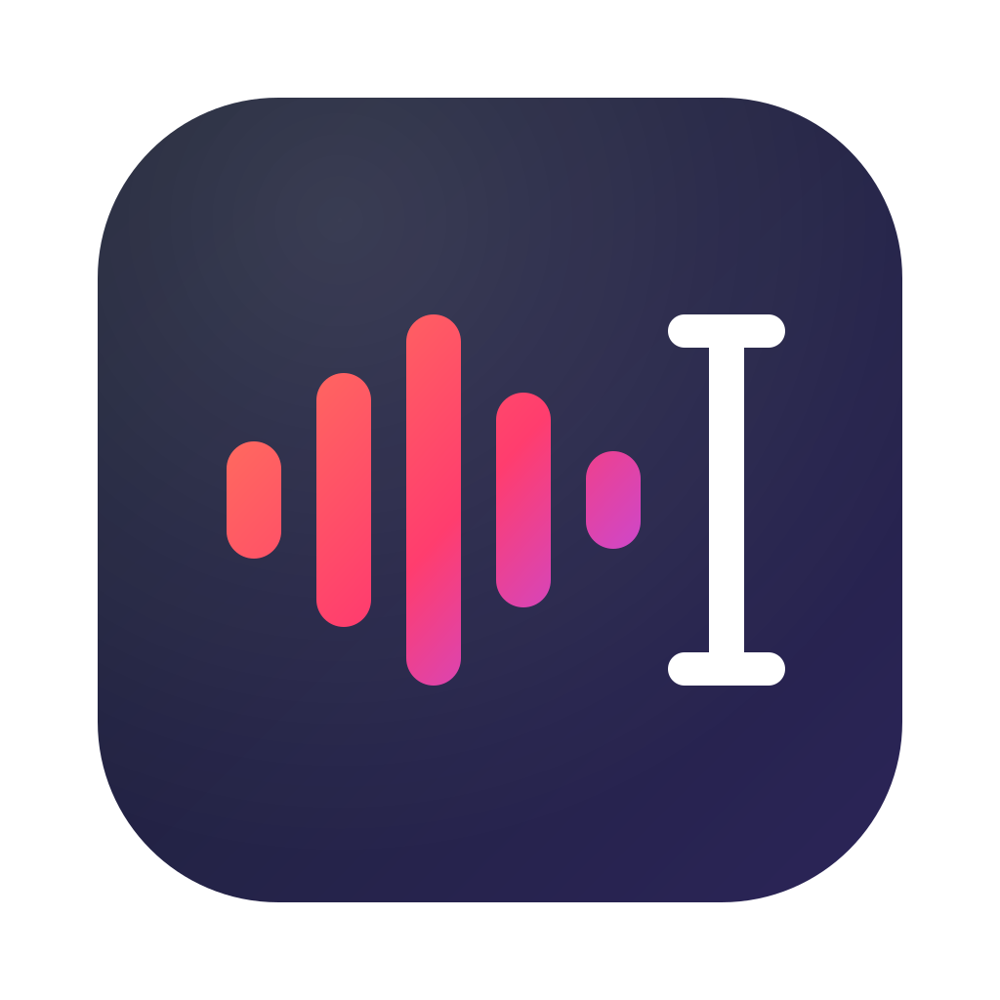
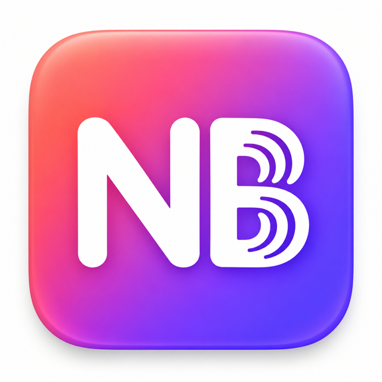
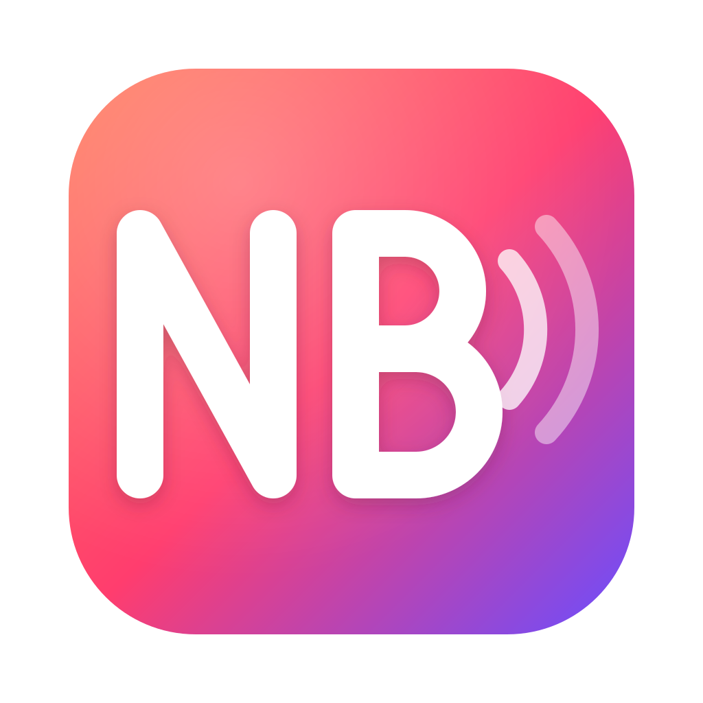

三个方向，每个都给了 Codex 出的效果图 和 能用代码画出来的矢量稿（选定后照矢量稿改 Glyph.swift，菜单栏的单色图也跟着换）。

「NB」加两道声波，交互稿 v1 的方案 B。
图标就是按住说话时浮出来的那颗胶囊：红色麦克风、跳动的声波、Liquid Glass 的玻璃边。认得胶囊就认得它。


几道声波由低到高再落下，最后一道变成打字的光标：说出来的话变成字，这就是它干的全部事情。


留着现在的「NB + 声波」，重新画：笔画收细、字距拉开、声波从两道荡开的弧改成渐隐，整体往中间收。


矢量稿源文件：design/homepage/logo/*.svg · Codex 效果图：design/homepage/logo/codex-*.png · 选定之前不动 AppIcon.icns